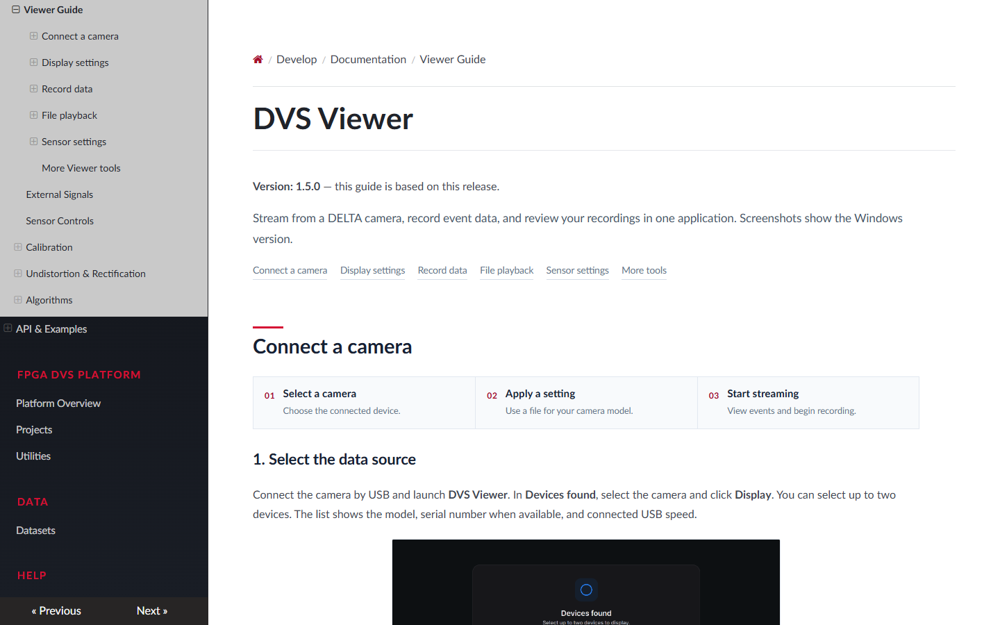
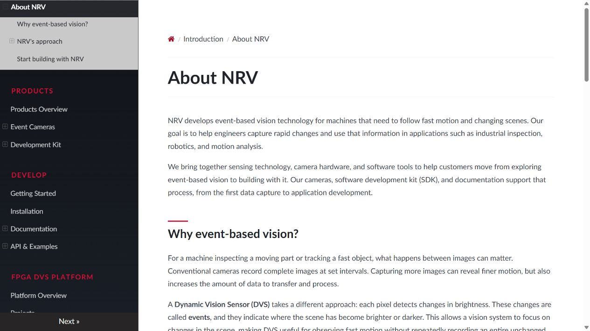
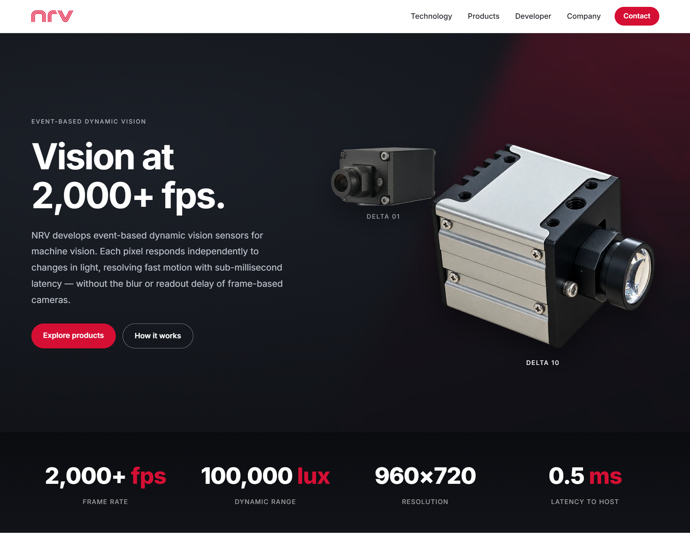
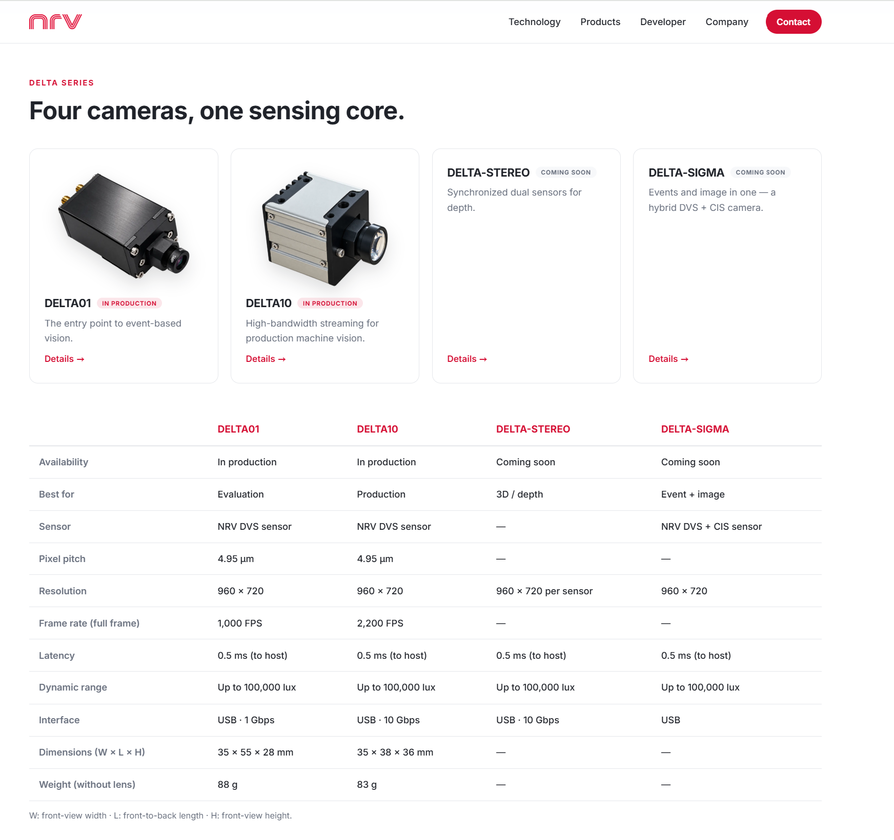

기술 문서와 제품 홈페이지 개선
센서 기능을 구현한 뒤, 처음 사용하는 사람도 연결부터 녹화·재생까지 따라갈 수 있도록 Viewer Guide와 기능별 공식 문서를 직접 작성했습니다. 홈페이지에는 애니메이션과 제품 소개를 보완하고 사양을 정리해, 제품을 살펴보는 단계에서 실제 촬영까지 이어지도록 개선했습니다.
1. 사용 순서에 맞춘 문서 구성
개발할 때는 어떤 레지스터를 바꾸는지가 중요하지만, 카메라를 처음 연결하는 사람에게는 케이블을 어디에 꽂고 어떤 항목을 선택해야 하는지가 먼저 필요하다. 구현 내용을 그대로 나열하면 기능을 이해해도 실제 촬영을 시작하기 어렵다. 그래서 연결 준비, Viewer 조작, 동작 원리 순서로 설명을 다시 구성했다.
전체 조작 흐름은 Viewer Guide에 모으고, 제품 연결 위치를 다루는 Camera Interfaces, 외부 장치와의 촬영 시점을 다루는 External Signals, 영상 방향과 이벤트·영역 선택을 다루는 Sensor Controls로 상세 설명을 나눴다. 화면에서 쓰는 항목 이름과 문서의 이름을 맞추고, 설정 전 정지와 적용 후 재시작처럼 실제 조작 순서에 필요한 내용도 해당 단계에 넣었다.
기능 설명의 순서도 목적 → 필요한 연결과 상태 → 화면 조작 → 확인할 결과로 맞췄다. 예를 들어 트리거 설명은 모드 이름부터 늘어놓지 않고, 외부 장치의 신호에 맞추어 촬영하려는 상황에서 시작한다. 이어 입력 단자와 에지를 정하고, 촬영과 저장을 준비한 뒤 펄스를 보내는 순서로 연결했다. 코드를 읽으며 확인한 실행 조건이 사용 절차의 근거가 됐다.
Viewer Guide: 연결부터 녹화·재생까지
Viewer Guide는 프로그램을 처음 실행한 화면에서 시작해 장치 선택, 설정 파일 적용, 실시간 촬영, 저장과 파일 재생 순서로 직접 작성했다. 실제 화면을 캡처하고 조작 위치에 번호를 붙여, 설명을 읽으며 해당 버튼을 찾을 수 있도록 했다. 설정 파일을 선택하는 단계와 촬영을 시작하는 단계도 나누고, 적용 완료 알림을 확인한 뒤 Start를 누르는 흐름을 보여줬다.
화면 설정에서는 센서가 데이터를 읽는 FPS와 이벤트를 한 장으로 모으는 Frame Generation을 구분했다. 저장 설명은 원시 데이터를 보관하는 .dvs와 화면에 생성된 이미지를 남기는 BMP·AVI의 차이에서 시작한다. 이어 저장 위치와 남은 공간, 녹화 시간, 완료 알림을 확인하는 순서로 정리했다. 파일 재생에서는 카메라 없이 기록을 열고, 시간대를 이동하거나 누적 조건과 표시 색상을 바꿔 같은 자료를 다시 살펴보는 방법까지 연결했다.

Viewer Guide 장치 연결, 설정 적용, 이벤트 화면 구성, 녹화와 파일 재생을 실제 화면으로 안내한 공식 가이드.2. NRV 기술을 설명하는 기준
About NRV에는 이벤트 비전을 처음 접하는 사람이 제품의 동작을 이해할 수 있도록 기술 소개를 작성했다. 밝기 변화를 이벤트로 표현한다는 출발점에서, NRV의 이벤트 프레임과 Group AER, Global Reset·Global Hold로 설명을 이어갔다.
이벤트 프레임은 픽셀의 밝기 변화 정보를 프레임 시간과 함께 다루는 방식이고, Group AER는 여러 픽셀 이벤트를 한 패킷으로 묶는 전송 형식이다. 시간 정보를 공유하는 것과 좌표·이벤트를 묶는 것은 서로 다른 역할이므로 구분해 설명했다. Global Reset과 Global Hold도 단순히 “동기화 기능”이라고 묶기보다 밝기 기준을 갱신하는 시점과 측정 결과를 붙잡는 시점으로 나눴다.
특히 센서가 만드는 이벤트 프레임과 Viewer가 누적해 보여주는 영상은 구분해서 설명했다. 센서에서 여러 프레임을 읽는 동안 Viewer는 그 이벤트를 한 장에 모아 보여줄 수 있다. 이 관계를 먼저 이해해야 높은 센서 FPS와 비교적 느린 화면 갱신을 모순으로 보지 않고, 누적 시간을 바꾸었을 때 잔상과 점의 밀도가 달라지는 이유도 따라갈 수 있다.

About NRV 기능 이름보다 어떤 정보를 다루고 왜 필요한지부터 설명한 기술 소개. 이벤트 프레임과 Group AER, Global Reset·Hold를 정리했다.센서 기능을 직접 연결해 본 경험이 설명의 기준이 됐다. 독자가 기술 용어를 외우는 대신, Viewer에서 바꾼 설정이 출력 데이터와 측정 시점에 어떤 영향을 주는지 연결해 읽을 수 있도록 했다.
이 설명은 Viewer의 데이터 처리 순서와도 맞췄다. 수신 데이터에서 좌표·시간 정보를 복원하는 단계, 이벤트를 누적하는 단계, 색을 입혀 표시하는 단계가 서로 다르기 때문이다. 문서에서도 감도·센서 출력·화면 표시를 한 종류의 영상 설정처럼 설명하지 않고, 어느 단계에 영향을 주는 조작인지 드러내도록 정리했다.
3. 연결과 조작을 따라갈 수 있는 문서
카메라 연결 문서에서는 모델별 단자 위치와 신호 방향을 먼저 구분했다. DELTA 01의 SMA와 DELTA 10의 M8 단자는 형태뿐 아니라 연결할 수 있는 신호도 다르다. 사진과 핀 배치를 함께 놓고 Trigger In, Trigger Out, 외부 클럭을 각각 어디에 연결하는지 확인할 수 있도록 작성했다.
외부 신호 문서에는 트리거 모드별 타이밍 도식을 넣었다. Single, Burst single, Burst의 차이는 메뉴 이름만으로 이해하기 어렵기 때문이다. 입력 에지와 프레임 시작을 나란히 보여주고, 한 번의 입력 뒤 몇 프레임이 이어지는지를 설명했다. 또 센서의 타임스탬프와 프레임 인덱스는 각각 시간과 순서를 나타내므로, 기록에서 무엇을 읽어야 하는지도 구분했다.
Sensor Controls에는 실제 Viewer 화면을 사용했다. 반전은 화면 표시와 센서 출력의 차이를, Event output은 극성 선택과 변환의 차이를, ROI는 스캔 범위와 출력 범위의 차이를 중심으로 설명했다. 한 페이지에 모든 설정을 모으기보다 필요한 기능을 찾아 들어가도록 구성했다.
설정이 적용됐는지 확인하는 방법도 기능마다 달랐다. ROI는 사각형이 움직였는지만 볼 것이 아니라 수신 이벤트가 선택한 영역으로 제한되는지 확인해야 하고, 트리거는 입력 한 번에 어떤 촬영이 이어지는지 봐야 한다. 사용자가 눌러야 할 버튼과 그 뒤에 기대할 결과를 연결해, 조작을 따라 한 다음 스스로 상태를 판단할 수 있도록 작성했다.
| 코드에서 다루는 조건 | 문서에서 설명한 이유 | 사용자가 확인할 부분 |
|---|---|---|
| 센서 출력 변경 전 standby 확인 | 출력 의미가 바뀌는 설정은 촬영·저장을 멈추고 적용 | 적용 후 읽어온 선택 상태와 재시작한 영상 |
| Crop과 APS 영역의 변환 | 출력 좌표와 실제 스캔 단위가 서로 다름 | 선택 영역, 포함되는 스캔 구간과 출력 결과 |
| 외부 입력을 기다리는 수신 상태 | 트리거 모드에서는 입력 전 데이터가 없는 것이 정상 | 입력 에지와 프레임 발생의 관계 |
| 프리셋 모델·클럭 확인 | 설정 파일은 연결 모델과 촬영 조건에 맞게 선택 | 대상 모델, 해상도·FPS 조합과 적용 결과 |
4. 업데이트와 설정 파일 연결
고속 촬영 기능은 지원 사실을 알리는 뉴스와 실제 설정을 적용하는 문서의 역할을 나눴다. 뉴스에서는 어떤 촬영 조건을 사용할 수 있게 됐는지 소개하고, 상세 문서에서는 해상도·FPS별 프리셋 파일과 적용 순서를 제공했다. 사용자가 소식을 읽은 뒤 다시 설정 파일을 찾아 헤매지 않도록 서로 연결했다.
프리셋 목록에는 속도뿐 아니라 센서 영역 크기를 같이 표시했다. 같은 카메라라도 넓은 장면을 보면서 촬영하는 조건과 작은 영역을 아주 빠르게 읽는 조건은 쓰임이 다르다. 설정 파일을 내려받고, 촬영을 멈춘 상태에서 적용한 뒤 다시 시작하는 절차까지 작성해 실제 Viewer 조작으로 이어지도록 했다.
파일 이름과 다운로드 항목에도 모델, FPS와 해상도를 연결했다. 파일을 다른 폴더로 옮기거나 촬영 자료와 함께 전달했을 때도 어떤 조건인지 알아볼 수 있어야 하기 때문이다. 뉴스는 변경 내용을 빠르게 확인하는 입구로 두고, 반복해서 사용하는 설정 파일과 절차는 사용 문서에 모아 두었다.
고속 촬영 지원 업데이트에서 변경 내용을 소개하고, High-Speed Preset Downloads에 설정 파일과 사용 방법을 정리했다.
5. 홈페이지와 제품 사양 개선
공식 홈페이지의 첫 화면에는 카메라 이미지와 애니메이션을 추가하고, 제품을 살펴보거나 동작 원리를 읽는 경로를 보완했다. 처음 방문한 사람이 어떤 카메라인지 빠르게 파악한 뒤 제품 소개와 개발 문서로 이동하도록 구성했다.
Astro의 첫 화면 컴포넌트에서는 DELTA 01과 DELTA 10을 함께 배치하고, 선택한 제품에 따라 이미지와 배경의 강조가 바뀌도록 구현했다. 마우스를 올렸을 때뿐 아니라 키보드로 제품 링크에 초점을 옮겨도 같은 강조가 나타난다. 터치에서는 hover 효과를 기다리지 않고 제품 링크로 이동할 수 있도록 입력 방식을 구분했다. 제품 이미지가 장식으로만 남지 않고 실제 탐색 동작으로 이어지게 한 것이다.

NRV 홈페이지 카메라 이미지와 애니메이션, 제품·기술 소개로 이어지는 탐색 동작을 개선했다.
제품 페이지 해상도, FPS, 인터페이스와 외형 정보를 같은 기준으로 비교할 수 있게 정리했다.제품 페이지에서는 해상도, 프레임 속도, 인터페이스, 외형 크기와 무게 등을 같은 항목으로 비교할 수 있게 정리했다. 기술 소개에서 설명한 특성이 제품을 선택할 때 어떤 조건으로 나타나는지 연결하는 작업이었다. 홈페이지는 제품을 이해하는 입구로, 공식 문서는 실제 연결과 운용을 돕는 자료로 역할을 나눴다.
구현에서는 제품별 사양 데이터를 한곳에 정의하고 제품 상세와 비교표가 그 데이터를 사용하도록 했다. 같은 수치를 화면마다 따로 적으면 사양을 수정했을 때 한쪽만 남기 쉽기 때문이다. 전체 해상도에서의 FPS, 호스트까지의 지연, 렌즈를 제외한 무게처럼 수치의 조건도 항목에 함께 표시해 같은 기준으로 읽을 수 있도록 정리했다.
작은 화면에서는 글과 제품 이미지를 세로로 배치하고 화면 크기에 맞는 이미지 파일을 사용한다. 첫 화면의 주요 제품 이미지는 우선 불러오도록 설정했으며, 사용자가 운영체제에서 움직임 줄이기를 선택한 경우에는 전환 효과를 끈다. 애니메이션을 추가하면서도 제품 정보와 이동 기능은 화면 크기나 입력 방식에 관계없이 사용할 수 있도록 구성했다.
6. 구현과 설명을 함께 정리하기
센서 기능을 구현한 뒤 문서로 설명하면서, 코드에서 알고 있던 조건을 사용자의 관점으로 다시 점검했다. 기능 이름이 비슷해도 적용되는 위치가 다를 수 있고, 설정값을 바꾸는 것과 촬영을 다시 시작하는 순서도 구분해야 했다. 문서에 사용할 화면과 타이밍 도식을 정리하는 과정이 조작 흐름을 다듬는 작업으로 이어졌다.
그 과정에서 설명의 출발점도 바뀌었다. 레지스터나 함수 이름을 많이 적는 것보다, 사용자가 어떤 결과를 얻으려는지 먼저 정하고 그 결과를 만드는 설정과 확인 방법을 연결하는 편이 이해하기 쉬웠다. 원리는 필요한 지점에서 풀고, 실제 조작에는 화면에 보이는 이름을 사용해 구현과 설명이 같은 대상을 가리키도록 맞췄다.
팀원들과 진행한 Viewer 연동을 기반으로 센서 제어 기능을 확장하고, 그 기능을 사용할 때 필요한 설명과 홈페이지 구성을 직접 정리했다. 카메라를 연결한 뒤 데이터를 얻는 단계에서 더 나아가, 다른 사용자가 같은 기능을 이해하고 적용할 수 있는 형태로 전달하는 과정까지 경험했다.